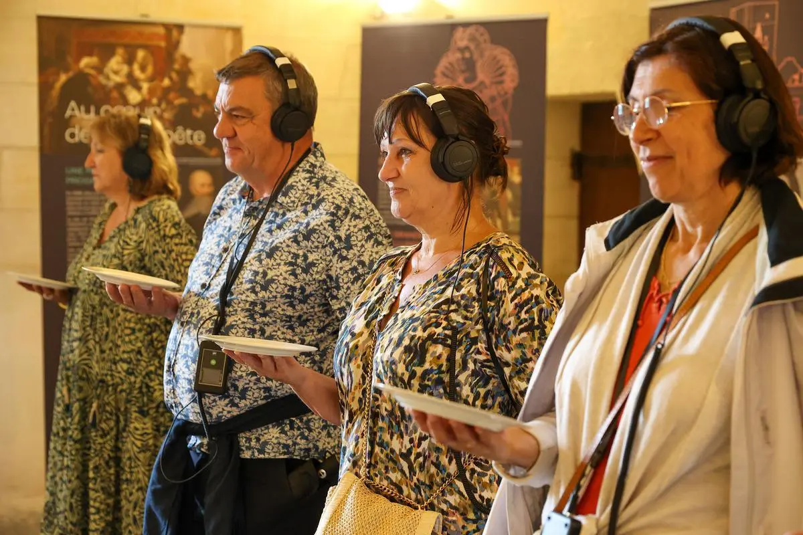

Le Banquet
Expérience Immersive
Mon rôle : Sound Design & Composition musicale
Le Banquet est une expérience sonore immersive à découvrir dans les salles du Château de Cadillac. Pendant quarante minutes, les visiteurs équipés d'un casque audio sont projetés dans un banquet qui aurait pu se dérouler au temps de Louis XIII. Ils seront amenés à rencontrer le Duc D'Epernon, propriétaire du château de l'époque, et à réaliser une enquête sur sa tentative d'assassinat.
Ce projet est le fruit de la collaboration entre le Centre des Monuments Nationaux et le Tamanoir Immersive Studio.

La conception sonore s'appuie sur la réalité historique pour plonger les participants dans ce qu'aurait pu être la vie du château au XIIeme siècle. Il était important pour moi d'exploiter la chance de réaliser une expérience dans un tel lieu. J'ai donc réalisé des réponses impulsionnelles des différentes salles du château dédiées à l'expérience afin de créer un contexte de réverbération réaliste et immersif.
Crédits
- Écriture
- Roman Facerias
- Voix
- Jean-Yves Chilot, Mathilde Guzzo, Claire Saumande
- Production
- Rémi Large
- Sound Design/ Composition musicale
- Jean Le Bellego